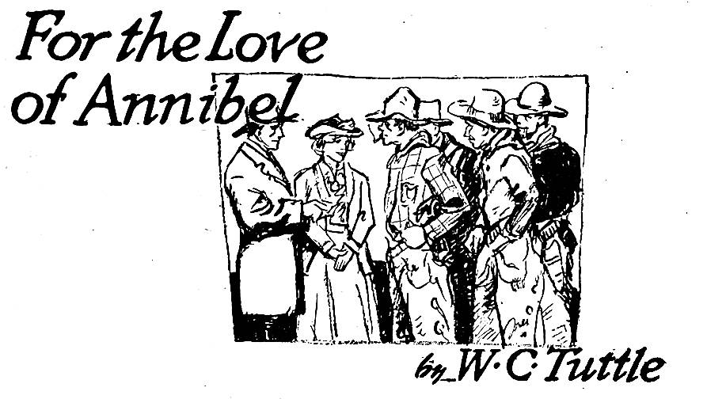

I knowed it! I knowed it jist as well as though it had been yelled from th’ house-tops. Any time I hears uh noise like that I’m wise to th’ fact that joy has departed from life.
I ain’t one uh these fellers who see bad luck in black cats and prophesy bad weather from sun-dogs or th’ shadow of th’ ground-hog, but, by cripes! any time I hears Magpie Simpkins massacreein’ “Sweet Adeline” I’m plumb wise.
He stops jist outside th’ cabin door and enlightens me that “yore th’ flower-r-r-r-of my heart-t-t-t-, sweet Ade-e-e-eline.” Magpie shore has ambition but when he comes to ability he don’ assay uh trace.
I gits my ol’ .44 and sneaks to th’ door.
“’Pears to me that th’ coyotes are gittin’ thicker every day in Piperock,” I orates aloud.
“Yore kind applause is appreciated, Mister Harper,” sez he. “Nothin’ tickles th’ cockles of uh man’s heart like hearty appreciation of his talents. I’m plumb grateful to yuh.”
“Oh, hello, Magpie!” sez I, sorta surprised. “I reckon yuh done scared th’ howler away.”
Magpie bows. He rises to his six feet six, or thereabouts, and I’m surprised at his next move. He musses up his ha’r, spits on his hands and ambles up and down in front of th’ cabin, draggin’ first one foot and then th’ other. He walks like uh man with th’ rheumatics and all th’ time he’s sayin’ somethin’ like this:
“Curse yuh! Cur-r-rse yuh, Alexander Wiffletree, I’ll have me revenge. It’s th’ papers or yore life!”
“I don’t know Alex,” sez I, “and I don’t want to know any man with uh name like uh cross between uh de-ceased monarch and uh wagon decoration. Where does Alex tend bar, Magpie?”
“Avaunt!” roars Magpie, and glares at me like I had jist pushed him into uh cactus pile.
“Never saw th’ place in my life,” I states. “If you’ve jist come from there I’d shore admire to smell what he sold yuh.”
Magpie stops millin’ and puts on his hat. He grins at me and rolls uh smoke.
“What do yuh think of it, Ike?”
“I don’t like it,” I replies. “There’s somethin’ noble about drinkin’ hooch which produces purple snakes and li’l green devils with red hats on but— Magpie, if I was you I’d shore let Alex’s stuff plumb a-lone.”
“Huh!” sez Magpie. “Ike, that’s actin’.”
“Unha,” I agrees heartily. “She shore is. I’ve never seen anythin’ act like that before. I’ve beheld uh half-breed Cree full uh lemon extract and turpentine, and I’ve seen uh half-witted Greaser lit up with tequila and sulphuric acid cocktails; but them sights were tame compared with what I’ve jist witnessed. I’m sorry, Magpie. Yore pore ol’ stepfather would——”
“Ike Harper,” sez he, “yo’re locoed! I ain’t had uh drink today. I was jist tryin’ out my e-motions. I’m goin’ to be uh actor.”
“Actors don’t have pardners, so that lets me out,” sez I, sorta thankful like. I was afraid he was goin’ to rope me into one uh his schemes. “I’ll hate to see yuh go, Magpie, but I feels shore you’ll drop me uh line once in uh while. When do yuh reckon to leave?”
“I ain’t goin’ to leave.”
“Oh, I see,” sez I. “Yo’re goin’ to be uh actor but yo’re still goin’ to prospect or punch cows for uh livin’. Johnny Myers, of th’ Five Pot outfit, was sayin’ yesterday that all he could git nowdays was bad actors and mail-order punchers. Yuh might see him and——”
“Lissen!” sez he. “We’re goin’ to have uh show right here in Piperock.”
I starts to orate that in my opinion nobody has uh show in Piperock, but Magpie is lookin’ me in th’ eye and I saws off on th’ humor stuff. Magpie likes our fair city.
“It’s this way, Ike,” sez Magpie, makin’ himself comfortable against uh lodgepole post. Magpie’s shoulder-blades jist fits uh six-inch post and sorta lock around it. “There’s uh lady jist comes to our town yesterday, th’ name of which is Madame Della Selva, and she proclaims that she’s goin’ to produce uh reg’lar theater play called, ‘For th’ Love of Annibel.’ She’s goin’ to rustle her outfit right here, and unless I’m uh heap mistaken I’m goin’ to be th’ foreman of that Annibel outfit. She calls it ‘home talent,’ Ike. She’s aimin’ to have it in th’ old Mint dance hall. She reckons to build uh platform to play on, sabe? Tonight she’s goin’ to have us all come down there and talk it over. She’s uh promisin’ lookin’ filly.”
“Sounds like th’ cover of uh cigar box,” I replies. “Who is this Annibel person?”
“She’s th’ heeroine of th’ show, Ike. Bein’ familiar with this Annibel person, Miss Selva takes that part. Roll is what she calls it. You’ll go with me tonight, Ike.”
He didn’t put no question mark after that last sentence and it makes me uh heap sore. But that’s Magpie. He’s always throwin’ bricks in th’ air and I’m th’ li’l jasper what always gits it on th’ head when she comes down.
I ain’t no actor and I ain’t got no ambition thataway. I know such things live and have their bein’ ’cause I’ve seen ’em in honkatonks from Nome to th’ Mexican border and across to Butte.
Once I saw uh show in Helena. It was, unless I’m uh heap mistaken, called “Love.” I stayed long enough to see three men get killed and then I went out to git uh drink and took my hat and overcoat along. I reads one time that plays have uh powerful influence on mankind. That one shore did with me. I’ve hardly spoken to uh female person since.
I re-fused Magpie jist like I always do. Ab-solutely refused to go down there with him. There was no reason why I should go. It didn’t interest me none, so I said I wouldn’t go.
Well, when we got there, I reckon half th’ population was there. Old Tellurium Woods was occupyin’ one of th’ front chairs and beside him was old Judge Steele. In my opinion them two ought to be killed while they’re happy.
Th’ old judge was wearin’ his long-tailed coat and Tellurium was clean shaved from his upper lip to th’ back of his collar. Th’ point of interest seemed to be uh fe-male over in th’ corner. She was bein’ close herded by Ricky Henderson, Slim Hawkins and Art Miller.
“That’s Della Selva,” states Magpie. “Come over and I’ll give yuh a knockdown to her, Ike.”
We starts over that way but th’ fe-male beats us to it. She pushes Slim to one side and lopes right up to me. She’s what you’d call uh light sorrel and frisky fer her age. She shows uh right good gold prospect when she grins, and she hooks right on to my coat.
“I’ve never met you, have I?” she asks.
I don’t have time to answer before Magpie butts in.
“Miss Selva,” sez he, “this person is Ike. He’s all right at heart but he looks mean. His other name is Harper.”
I sees about twenty-five dollars’ worth uh gold when she smiles this time, and she makes uh noise like uh moose bird when it discovers uh nice fat grub.
“Mister Harper, I’m de-lighted!” sez she. “I know jist th’ part I wants yuh to take. You see I’ve got to——”
“Miss,” sez I, “I ain’t no actress a-tall. I jist comes to this meetin’ to keep cases on Magpie Simpkins.” I taps my head and winks at her. “Oh no,” sez I, “he ain’t dangerous. I stopped him before he eats all th’ loco weed. All he ate was th’ roots.”
“Well!” sez she, jist like that. “Well!” She looks at Cobalt Williams and Slim and they’re swallerin’ hard and havin’ trouble with their collars. Magpie puts his hand on my shoulder sorta easy like and I’m, well, sorta sorry I spoke.
Jist then in comes Buck Masterson and Miss Dougherty, th’ new schoolma’am, and Buck is leanin’ on her arm like uh cripple. Buck wouldn’t be uh bad-lookin’ feller if it wasn’t fer his face. Fer two years he’s been keepin’ steady company with Miss Harris, the postmistress, and now here he’s bustin’ his cinch tryin’ to locate some school property.
I hates uh two-faced man, and as soon as I had uh chance I got Buck over in th’ corner and tells him so. It makes him sore and he orates that he ain’t no such thing, and if he was, he’d loan me one of them so I could appear in select company. Miss Harris was there, too, but she don’t act like she cared much.
After uh lot uh general wau-wau Miss Selva gits up on th’ fiddler’s platform and looks us over.
“Friends,” sez she, “we may as well proceed to business. I’ve decided to give Mister Masterson th’ part of Annibel’s father. Mister Woods will do nicely as Mose Johnson, th’ colored retainer of th’ family. Miss Harris will——”
“Desist!” sez Tellurium, standin’ up. “Do I decipher yore oration to th’ extent that I’m to be uh nigger?”
“Yes, you’ll be th’ old colored man who saves——”
“Desist twice!” snorts Tellurium. “I draws th’ color line. I’ll be anything else in th’ outfit, but I’ll be——”
Cobalt Williams and Slim Hawkins had done got up and walked around in front of Tellurium when he opines.
“You’ll be th’ ol’ colored man, Tellurium,” sez Cobalt.
Tellurium looks at Cobalt and then at Slim, and switches his chew to th’ other side of his fat face.
“Yes,” sez he, “if yuh puts it thataway, Cobalt.”
“Now,” continues th’ fe-male with th’ Havana-filler name, “I’ll give Miss Harris th’ part of th’ adventuress.”
Miss Harris is about five feet four inches high, forty-four years old, and has uh rosy li’l nose. Her hair ain’t none too luxuriant, and she favors one front foot uh heap. Jist bein’ alive is enough adventure fer uh fe-male like her.
Miss Selva goes right on without no comments:
“I’ll cast Mister Williams as Jake Fillmore, th’ village cut-up. This is uh rural drama, sprinkled with real comedy.”
When anybody sez “comedy” to me I begins to git organized. I knowed two fellers oncet who helped lynch uh hoss thief, and one uh them said it was comical to see that feller swing around on that rope and kick. They both snickered out loud while they was a-tellin’ about it.
“Now,” sez this fe-male person, “I’ll cast Mrs. Smith as Sary Suzenhammer, th’ village gossip.”
By cripes! She shore hit th’ bull’s-eye that crack! Mrs. Smith beats any daily paper on earth for local news. Somebody snorts out loud and Mrs. Smith ruffles up like an ol’ hen. Wick Smith gits red behind his ears and loosens his gun. Miss Selva sees that she’s made uh noise in church, so she gits busy talkin’ again.
“I’ll se-lect th’ rest of th’ cast later. With one or two exceptions them are th’ main rolls, and one uh them exceptions I’m goin’ to speak about right now. I need uh leadin’ man. He must be good lookin’ and able to make love.”
Magpie shifts in his chair, twists his mustache and glares at Slim Hawkins, who is doin’ th’ same, only Slim ain’t got no mustache. He don’t realize he had it cut off th’ day before.
“I’d like to suggest,” remarks Slim, “that I’ve——”
“Haw! Haw! Haw!” roars Magpie in uh high key. “Slim is jist about to——”
Slim jumps to his feet and appears to be listenin’ for uh moment and then he turns to Cobalt.
“Cobalt,” sez he, “did yuh hear that? By golly! That ol’ crippled jackass yuh sold Sourdough Watson, down to Mica, has shore come back home! I’d know his voice among uh thousand.”
“As I was goin’ to say,” continues Slim, “I feels that in that kind of uh part I’d be there four ways from th’ jack. I’ve done read love stories by Bertha M. Clay and I’m jist finishin’ uh book called ‘Love Letters to Lonesome Men.’ I feels that I can put th’ proper quavers on my voice; and I don’t look so awful.”
Slim looks right at Magpie when he makes that last statement and then sits down.
Magpie ain’t no Venus when it comes to shape. He looks like th’ architect who planned him had started out to make uh memorial to uh lodgepole, lost th’ plans and let some drunken workmen finish th’ job. Yuh simply got to look up to men like Magpie.
“All I’ve got to say,” states Magpie, standin’ up and pickin’ splinters out of th’ ceilin’, “is this: Miss Selva comes clear out here to put on this show and I’d shore hate to see it ruined. Now, I’m fitted to that leadin’ part like machine-oil on uh six-gun, and I shore won’t re-linquish my chances without uh murmur.”
Miss Selva clears her beautiful throat and smiles at all of us.
“I was just thinkin’ that perhaps Mister Harper would care for the part,” she states, soft like.
“Beggin’ yore pardon, lady,” sez Magpie, “I reckon I misunderstood yuh. I thought yuh said ‘uh good-lookin’ man and one who could make love.’”
“Haw! Haw!” squeaks Slim. “Ike Harper, leadin’ lover!”
That made me sore. Bein’ of uh retirin’ disposition don’t argue that uh man ain’t got no ability. I gits up on my hind legs and slides my ol’ .44 around to th’ front.
“Ma’am,” sez I, “I shore appreciates th’ honor but I’m uh li’l out uh practise. Punchin’ cows and shovelin’ gravel into uh sluice sorta rusts uh feller fer lovin’. I honors myself by acceptin’ th’ job and then relieves th’ feelin’s uh some wise jaspers by resignin’ immediate and sudden. I thanks yuh again.”
“Wise words, Ike,” sez Magpie, as I sets down.
“Unha,” sez I, “I supposed you and Slim both had me covered from behind.”
“Well,” sez Miss Selva, thoughtful like, “perhaps Mister Henderson will accept th’ roll.”
Ricky started to git up but he happened to look at Magpie and Slim and he sets down some sudden. Ricky don’t even de-cline. He wets his lips and starts to roll uh smoke. He gits it made, throws it on th’ floor and then puts th’ sack of tobacco in his mouth. He ain’t in no shape to take th’ part a-tall. Jist about this time Pete Gonyer sa’nters in and sets down alongside of his wife. Th’ minute Miss Selva sees him she grins.
“Mister Gonyer might take th’ part,” she opines.
Pete looks at her and then at his wife, and swallers his chew.
“Aw!” sez he, jist like that. “Aw!” And he slides down in his seat so only his nose shows.
“Well,” sez Miss Selva, “I’ll give both Mister Simpkins and Mister Hawkins uh chance. I will start rehearsal tomorrow afternoon and I want everybody present. Tomorrow I will pass out th’ parts.”
Bein’ uh home-lovin’ sort of uh feller and not carin’ fer too much excitement, I takes th’ stage out of Piperock th’ next mornin’.
I got uh li’l minin’ deal to talk over with some fellers over in Helena and I’m also goin’ to take uh trip down to Warm Springs to see uh friend uh mine. That’s where th’ asylum is located. This friend uh mine took uh job herdin’ sheep oncet. I try to see him once uh year. He thinks he’s uh taranteler.
It’s two weeks before I returns to Piperock. I don’t ask Art Miller, th’ stage driver, no questions but I see that he’s plumb thoughtful over somethin’.
When I goes up to our cabin I finds Magpie with th’ parts of his six-gun scattered over th’ bunk promiscuous like and he’s polishin’ and oilin’ some particular.
“What’s th’ idea?” I asks, pointin’ at th’ gun.
“Dress rehearsal tonight,” sez he, short like.
“Are you takin’ th’ part of an outlaw?” I asks.
“No,” sez he, “but I may take th’ scalp uh one.”
“How’s th’ show comin’ on?” I asks.
Magpie slips that ol’ gun together and snaps it at uh knothole in th’ floor.
“To th’ bitter end!” he snorts.
“Well,” sez I, “it lasted longer than I figgered. Jist about what’s th’ trouble, Magpie?”
Magpie lays th’ gun down and rolls uh smoke.
“Ike,” sez he, “remember th’ time th’ Injuns had me and you corralled in that blind canon down in Arizona? Remember how we felt when that Apache war-whoop got up in th’ rocks above us and cut my suspenders th’ first shot? Well, that was an old ladies’ afternoon tea-party beside this Annibel thing.
“In th’ first place she takes Buck Masterson’s part away from him and makes Judge Steele th’ father of Annibel. Mrs. Smith re-fused to be th’ village gossip so they switches her and Miss Harris. Ike, jist consider an adventuress weighin’ two-seventy in her socks and squeaky with th’ asmy. Cobalt takes his part so danged serious like that he ain’t been sober fer uh week. Somebody told him he was funny when he was drunk and he’s aimin’ to git all th’ comedy out of his part.
“Miss Dougherty is what Miss Selva calls th’ on-gen-yew. She is supposed to make love to Ricky Henderson and it makes Buck Masterson so danged sore that he fired Ricky and hired another bartender.
“Ricky helped Tellurium to make up as uh coon last week. They never thought of burnt cork so they used ink. Ricky painted Tellurium’s bald head too and that stuff won’t even wear off. It’s waterproof, Ike, and Tellurium has issued his ultimatum to th’ effect that as soon as th’ show is over he is goin’ to kill Ricky by slow torture.”
“How’s yore part?” I asks.
Magpie picks up th’ gun and slips th’ cylinder full uh stub-nosed forty-fives before he answers.
“That’s settled. I jist can’t seem to understand that Miss Selva. I plumb wore out my Sunday pants makin’ love to her on my knees. I’ve orated every line of that part, Ike, and I’ve shore orated it right too, but she ain’t satisfied. Anyway she’s elected Slim to that job and handed me th’ part of Kirk Devill, th’ villain, which Art Miller was due to play. Say, Ike, yuh ought to see that Slim Hawkins act. He’s plumb bow-legged and every time he gits down on his knees to orate love to her he has to cross his feet. She calls my part th’ ‘heavy’. It’s shore goin’ to be uh load fer somebody, Ike, and it ain’t goin’ to be me.”
“Ike, there’s uh race-hoss in this play—reg’lar hoss on th’ stage. Miss Selva picked it out of Art Miller’s herd without no advice from anybody. She opines that she knows hosses and Art Miller, after havin’ his part taken away from him and bein’ sorta thrown into th’ discard, don’t have th’ heart to argue with her. She picks old Squaw!”
“Well,” sez I, “mebby she ain’t got no actors with reputations but she shore has uh hoss which has.”
Old Squaw can kick th’ soda out of uh biscuit and never bust th’ crust, and I’ve seen her buck an aparejo loaded with drill steel plumb off and never loosen th’ cinch. As uh cultus actor she couldn’t have picked uh better one.
“Bein’ as half uh Piperock is in th’ play and th’ other half is sore about it, what yuh goin’ to do fer a audience?” I asks.
“We’ll have th’ crowd, Ike. We’ve done advertised that there’ll be uh dance after th’ show, and I’ll bet everybody in Mica and Curlew will be there.”
“Well,” sez I, “I hope there won’t be no casualties.”
“You and me both,” agrees Magpie, standin’ up and practisin’ throwin’ his six-gun. “Yuh never can sometimes always tell. Annibel strikes me as bein’ uh troublebreeder. Ike, I wish yuh had uh stop-watch so yuh could time me. I’m gittin’ faster every day.”
I didn’t go over to th’ hall that night. I happened to git into uh poker game at Buck’s place and forgot th’ rehearsal until along about eleven-thirty Ricky Henderson sticks his head into th’ saloon and asks Buck to sell him uh pint of alcohol. He wants it to take th’ soreness out of uh black eye. He’s shore got uh beauty.
When I gits home Magpie’s snorin’ his head off and oratin’ in his sleep about “gittin’ th’ papers and turnin’ th’ old folks out in th’ cold.”
In th’ mornin’ he don’t have nothin’ to say. I puts in th’ day safely and organizes myself fer th’ evenin’ festivities.
Along about four o’clock th’ people start comin’ in. You know how they come—anything from uh four-hoss load to uh lone prospector with his burro. By eight th’ Mint Hall is plumb full.
Ol’ man Thatcher and his two boys sit down in front to dispense th’ music—two fiddles and uh banjo. Sourdough Watson and Half-Mile Smith, from Mica, sits one on each side uh me and jist in front is Dirty Shirt Jones, from Curlew.
Sourdough is wearin’ uh heavy frown and I asks him why for?
“Boots!” sez he. “Danged things too small. Gits ’em a purpose fer this dance. I wears twelves and these are elevens and a half. Reckon I’ll take ’em off.”
“Th’ same of which don’t appeal to me a-tall,” states Dirty Shirt, turnin’ around and lookin’ at Sourdough. “I done paid two dollars fer this seat and I argues fer my rights.”
“Bein’ from Curlew,” states Sourdough, “yore olifactory nerves ain’t in no state to de-tect odors. Yo’re used to real smells.”
I reckon there would have been uh chore fer Th’ Hague right then, but jist then th’ curtain went up and Sourdough slips off his boots.
There is one side of uh house on the stage and uh li’l fence and on this fence is uh li’l yaller-haired gal. By golly, it’s Miss Selva, but she don’t look more than fifteen. She talks to herself fer uh while but there is so much noise I don’t sabe what she says.
Then out comes Judge Steele, wearin’ uh black suit and false whiskers and leanin’ on uh cane.
“Dawlin’,” sez he, “yore pappy is gittin’ ol’ and feeble.”
“Haw! Haw!” roars somebody. “Dawlin’, yore pappy’s whiskers are slipping already. Better give ’em uh half-hitch before he loses ’em.”
Th’ judge sits down and plasters them whiskers back into place. Miss Selva looks th’ crowd over with uh mean look and then squats down in front of th’ judge.
“Daddy,” sez she, “ain’t there nothin’ I can do?”
“Gol ram th—— Keep off my bunion!” yelps th’ judge, and grabs his whiskers jist in time.
Jist then Tellurium comes on. He’s th’ shiniest nigger I ever seen. He’s got uh pair uh calico pants on and they’re jist about to bust in spots.
“Vell, Miss Annibel,” sez he, “see vat I prings yuh. De first magnolia plossom of de season.”
Dirty Shirt turns around and remarks:
“I’ve knowed some niggers in my life but that’s th’ first one I ever saw with uh German accent. It don’t stand to—— Say, Sourdough, you got yore boots off?”
Sourdough is too busy watchin’ th’ play to answer. Another person has showed up. It’s Cobalt Williams and he’s drunker than seven hundred dollars. He shore re-sembles uh hayseed in looks. He leans against th’ fence and said fence resents such familiarity by failin’ down. Cobalt gits up and leans against th’ house and Tellurium removes him just in time to save th’ whole structure.
Things seem to be uh li’l mixed, cause jist at this time in comes Ricky Henderson. He’s sa’nterin’ along whistlin’ and stumbles over Tellurium’s foot.
“Tellu—Mose Johnson, yuh black——!” snaps Ricky.
“Look where yo’re goin’, yuh stub-nosed maverick!” snorts Tellurium, as he lifts th’ porch around so she fits th’ house again.
Cobalt sits down on th’ porch and fumbles fer th’ makin’s.
“Chawlie,” gurgles Miss Selva, lookin’ at Ricky, “when did you come? I’ve been lookin’ fer you for so long.”
“Look’n fer him,” laughs Cobalt. “By g-gosh, Ricky, I can shee two of yuh. One of yuh co-come over an’ si’ down on schteps.”
Judge Steele gits nervous and wipes his face with a big red-and-blue handkerchief. Naturally, he loosens his whiskers, which he puts in his pocket and then tries to make the handkerchief stick to his face. Talk about buck fever!
Jist then Mrs. Smith and Magpie shows up. By cripes! I shore had to snort out loud. Mrs. Smith has got on Bill Holt’s hard hat and uh long black dress and is carryin’ uh cane. Magpie has got on Judge Steele’s swaller-tailed coat, green pants and uh pair uh shiny boots that Buck Masterson won from Kid Hanley seven years ago. Magpie’s got his mustache and eyebrows blacked and on top of his head he’s sportin’ uh shiny plug hat, which makes him about seven and uh half feet tall. Mrs. Smith is jist about that in circumference.
Nobody on th’ stage has seen them yet although they makes uh heap uh noise and stands in plain sight.
“Sh-h-h-h!” sez Magpie. “Play th’ game, my dear, and Sunnybrook farm is ours. All we need is th’ papers.”
“Trust me, Mag—Dirk,” sez she in that asmy voice, “I know—uh—my b-business.”
“Sunnybrook!” snorts Dirty Shirt. “That name makes me dry as—— Sourdough, you got them boots off?”
Jist then Slim Hawkins comes on. He ain’t got no hat on, his sleeves are rolled up and his collar is unbuttoned. He’s packin’ uh hoss-shoe and uh hammer.
“Colonel,” sez he to Judge Steele, “I’ve been—say, where in —— are yore whiskers?”
The judge removes th’ handkerchief and looks it over.
“Go on, Slim,” sez he. “You play yore part and I’ll play mine. Th’ danged mucilage was weak, I reckon.”
“I was jist goin’ to say that I’ve done shoed Black Bess,” said Slim, “and I’m believin’ she’ll win th’ Cotton handicap.”
“My boy!” yells th’ judge, grabbin’ fer Slim’s hand and gittin’ th’ hammer instead. “I’d die happy if such things could be. It would pay off th’ mortgage on Sunnybrook and make things easy fer my li’l gal, Annibel.”
“Hist!” sez Magpie to Mrs. Smith. “I have it now! I’ll fix that hoss so she can’t win that race. All you got to do is to win th’ sympathy of th’ ol’ man and th’ gal. Go to it!”
There’s an old pump in th’ yard and Mrs. Smith waddles over towards it sorta tired like. She grunts as she leans against it and tries to pump a drink. She’s so weak she sits down.
“Daddy, who is that?” asks Miss Selva, when she sees Mrs. Smith. “Why, daddy, she’s faintin’!”
Tellurium trots over and grabs her around th’ waist and tries to hold her up. By cripes! He shore needed uh derrick, ’cause they both goes to th’ mat and smash! There ain’t no more pump.
“You pore woman,” sez th’ judge, wettin’ his whiskers and wipin’ her face with them. “Some pore wanderin’ woman without uh friend. Pore li’l thing! Almost starved to death. Mose, go in and fix th’ guestroom fer our visitor.”
Jist then in comes Miss Harris. She takes one look at Mrs. Smith and then squeaks out loud:
“I wouldn’t take her in, colonel. She can’t be uh good woman and dress like that. Mebby she’s plannin’ to steal th’ family plate. She’s too purty to trust.”
“Haw! Haw!” yells somebody down in front. “If that’s th’ case we’d better look out fer them Digger Injun squaws down to Cinnamon Creek.”
Wick Smith got up and walked aroun’ in front of th’ audience.
“Who made them re-marks?” he asks.
“That ask goes double!” states Mrs. Smith, who has recovered from her faint spell and is now standin’ on th’ edge of th’ stage. “Some uh you wise galoots from——”
Mrs. Smith’s oration is postponed. There comes uh rip and uh smash and uh section of two-by-four comes sailin’ across th’ stage and hits Mrs. Smith in th’ widest part. She squawks loud and settles down gracefully on ol’ man Thatcher’s head and plumb ruins his fiddle. Uh piece uh that same scantlin’ swipes Judge Steele across th’ shins and th’ judge pinwheels outa sight, cussin’ like uh mule skinner. Miss Selva lets uh mansized whoop escape from her system and emigrates.
“Whoopee!” yells Sourdough, who is nervous and excitable. “Yohe-e-e-e! Whoop!”
He picks up one of his boots and starts to throw it at th’ stage. Jist at that time Dirty Shirt starts to stand up and get uh better view of th’ stage and that boot heel swats him just behind th’ off ear.
“Ump!” sez Dirty Shirt satisfied like, and slumps down into his chair and slides from there to th’ floor.
“Nice work, Sourdough,” applauds Half Mile. “Nothin’ gaudy nor messy. Jist clean and comfortable. Git it patented.”
My attention is drawn back to th’ stage. That pretty li’l house is rapidly comin’ to th’ front and there’s uh heap uh noise behind it. Then I hears Magpie’s voice yellin’—
“Kick, yuh son-of-a-gun, kick!”
And then out on th’ stage comes old Squaw, with Cobalt on her back and she’s kickin’ delirious delight out of everything in sight.
“Yowhee!” yells Cobalt. “Buck, you sorrel, buzzard-headed, sun-fishin’, chunk uh coyote bait! Yeow-w-w-w-h!”
Did she buck? Say, that hoss has th’ rep of bein’ th’ prize bucker of Montana, but I reckon that she pulls enough right there in th’ middle of that li’l stage to stretch that rep to cover everything west of Chicago.
I counts th’ jumps that Cobalt stayed and it was jist two. After which he stands on his head in th’ first row of seats fer uh moment and then shoves his boots into Bill Thatcher’s face and goes to sleep.
Old Squaw starts to jump right off the stage into th’ audience and all th’ male members begins to throw their hats at her to make her go back. Jist about this time Dirty Shirt comes back to life and gits th’ foolish idea that them hats are to be shot at.
Th’ first I knowed about it was when his big gun exploded almost under my nose, and th’ lights went out. Th’ stage light has been busted fer some time and Dirty Shirt’s bullet plumb ruins th’ big kerosene lamp in th’ ceilin’. I reckon that tap on th’ head sorta queered his aim and he shoots high.
Say, that shore was some convention! I could hear everybody yellin’ and pushin’ and tryin’ to find th’ door and git away from that crazy cayuse in th’ dark. Jist about that time Dirty Shirt yells in my ear:
“I told yuh not to take them boots off!” And then Bam! Somethin’ hits me on th’ head and I saw th’ fall of Rome.
When I gits things straightened out again there ain’t no noise goin’ on a-tall. It shore is dark and silent. As I starts to set up I hears some one cuss fluently and then uh match is lit.
“I jist come back,” sez uh voice, and I recognizes Dirty Shirt, “to find out who I hit with that boot. I thought it was Sourdough, but I finds that he goes out ahead of me.”
“I’m goin’ to quit wearin’ uh gun,” sez I, “and wear a boot. They has th’ same effect without th’ noise and smoke.”
“Then you ain’t sore at me, Ike?” he asks.
“Not any, Dirty,” sez I. “I thanks yuh fer showin’ me th’ efficiency of modern weapons.
“Well,” sez he, rubbin’ th’ place behind his off ear, “I’ve been showed, too, so we’re both eddicated, Ike. Let’s go over and git uh drink. Bein’ as that bronk done busted up our orchestra there ain’t goin’ to be no dance.”
“Did anybody git killed?” I asked.
“Not yet. Miss Harris and Miss Selva are over at Holt’s house takin’ turns at havin’ hissteeriks or somethin’ like that. Mrs. Smith won’t ride hossback fer uh spell, and old man Thatcher suffered uh broken rib and uh fracture of th’ fiddle. Old Squaw kicked all of Ricky Henderson’s front teeth out and never cut his lips, after which she essays to dive out of one uh th’ rear windows. She did it too, Ike.”
We starts across th’ street towards Masterson’s saloon and meets Magpie.
“Where’s everybody?” I yells.
“Shut up!” snaps Magpie. “Don’t make so danged much noise, Ike. Judgin’ from some of th’ opinions I’ve heard expressed, our one-act thriller wasn’t appreciated, and most of th’ crowd are on uh still hunt fer me and Cobalt. Uh course they blames us. Have you got uh gun with yuh, Ike?”
“Shore have. Where’s yours?”
“I had it in my hip pocket when the cyclone hit and I accidentally gits in range of old Squaw. She jist naturally kicks me uh glancin’ blow which hooks under that six-gun and I reckon it follwered uh quarter section of my pants plumb out of th’ county. I seen Cobalt foolin’ with th’ mare and I goes over to see what he’s doin’. Jist then it started. It shore spoiled one good show, Dirty Shirt.”
“That last re-mark shore prejudices me agin you, Magpie. That were th’ worst show—barrin’ none—that I ever seen.”
“Ike,” sez Magpie, “give me yore gun!”
I did jist that, and he turns to Dirty Shirt.
“Mister Jones, do you appreciate art as it is expressed in our efforts this evenin’?” sez he, fondlin’ that ol’ gun.
“I done lost my gun in th’ ruckus,” complains Dirty Shirt, “and I done left that boot up-stairs. Bein’ in said position I don’t hesitate to state that I shore does appreciate it to th’ depth of my artistic soul, Mister Simpkins.”
“Hoo, hoo!” sez uh li’l voice behin’ us, and we all turns and strains our eyes in th’ dark.
“Hoo, hoo, yourself,” returns Magpie.
“Co-come over here and lift this—danged sidewalk off,” pleads a voice, which we recognize as belongin’ to Cobalt.
We goes over to th’ entrance of th’ hall and lights some matches. We sees two hands protrudin’ from under th’ walk, which was smashed flat in th’ hurried exit. We lifts it up and hauls out th’ re-mains of Cobalt Williams.
“I give thee much thanks fer succor,” wheezes Cobalt.
“If I hadn’t left that boot behind!” mourns Dirty Shirt. “Save uh man’s life and then have him call yuh uh sucker!”
“This is uh different kind of uh fish,” states Magpie.
“They’re all alike except oysters,” opines Dirty Shirt. “I’m goin’ over and git some hooch. My nerves shore need bracin’.”
Dirty Shirt goes weavin’ off across th’ street and then I turns to Magpie.
“Let’s all go up to our cabin. No use stayin’ here on th’ street and invitin’ disaster.”
When we gits up there Cobalt wants to know what I means by speakin’ of disaster. He sez he remembers fallin’ down-stairs and rollin’ under th’ walk, and that th’ walk done laid down on him.
“What did yuh do to that hoss?” asks Magpie. “Didn’t I see yuh rubbin’ her hip?”
“Yes,” sez Cobalt, “I was doctorin’ her. You see she’s got uh cut on her hip and Masterson tells Art Miller what to git to put on it. Art gits th’ dope on his last trip and, bein’ sorta peeved at th’ show bunch, he asks me to rub some of it into th’ cut in th’ evenin’. He didn’t want it to git any worse.”
“Cobalt,” asks Magpie, “do yuh know jist what medicine that was?”
“Shore. I heard Masterson tell Art to git some carbonate bi-sulfid. He said that with uh li’l external massage it would bring uh dead hoss to life.”
“You——” began Magpie, but Cobalt wails:
“Aw, don’t git sore, Magpie. I only fol-lered directions.”
“Errare est humanum,” quotes Magpie seriously.
“Th’ same in United States means what, Magpie?” asks Cobalt.
“That,” sez Magpie, “in th’ Cree language means ‘To forgive is divine.’ I forgives yuh, Cobalt, fer beatin’ me to it. I had uh stick ready to put under that bronk’s tail.”
“For th’ love of —— ” sez I.
“Make it Annibel,” sez Magpie.